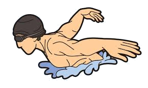

Project 2
Good day and welcome to my webpage! I have created this webpage for Project 2 for the Fundementals of Web Development class at Illinois Tech.
About Me
Swim Team

I have a deep love of swimming. I have been in and around water for longer than I can remember, but it was not until middle school that I learned that swimming was an actual sport. I got my start swimming competitively at a local YMCA and immediately fell in love. Up until that point, I had been bouncing around from sport to sport never really finding a good fit and had almost written off sports entirely.
Leading up to starting high school, I could think of little else than starting at a real swim team. The YMCA league was a good start, but few there took it as seriously as me, and unfortunately club teams were not an option for my family. When I started high school, I finally got a taste of real competition. I was no longer the big fish in a small pond, but a tiny fish in a gargantuan ocean and that excited me.
Throughout my high school career, I qualified for districts all four years and for state my junior and senior years. I did not place at state, but it was an experience I would not trade for anything.
Nowadays I don't have time to swim as often as I would like, but I try to get out to a pool or lake whenever I can. I am nowhere near in the same shape as when I was competing, but I still value swimming for the excerise and the elation I get whenever I do find the time.
Homeschool
Up until my junior year in high school, I was homeschooled. This came with several advantages and disadvantages, more of the latter in my opinion. Some of what I precieved as advantages when I was young later turned out to be disadvantages too.
The biggest example of this was the flexible schedule. I had no real deadlines with my schoolwork growing up and while this was great for when my family took a middle of the school year trip somewhere or being able to go out during the school day when theaters and zoos are slow, it also means I did not train my time management skills when I was young. I have become much better nowadays but still far from where I wish I was.
When I reached my junior year in high school, I was enrolled in a program called Running Start at a local community college. This program allowed me to take college classes for both college and high school credit. While I did technically succeed and gained many credits, I also failed a few classes due to being woefully unprepared for college.
In my early twenties, I reenrolled in that community college and retook the classes and failed and finished my associates degree.